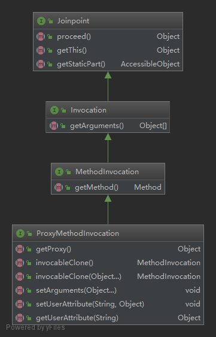
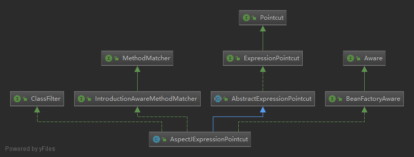
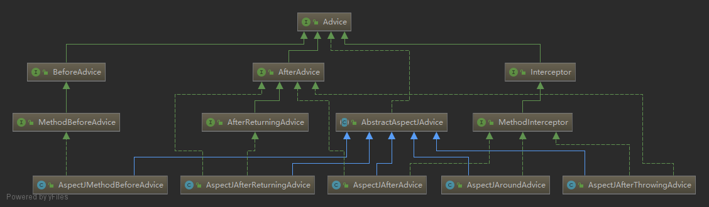

AOP即面向切面编程(Aspect Oriented Programming)，通过预编译方式及运行期动态代理实现程序功能的统一维护的一种技术。使用aop对业务逻辑的各个部分进行隔离，降低业务模块之间的耦合，维护业务模块的单一职责性。
AOP主要用作：事务控制、安全控制、日志记录、性能统计、异常处理等（这些功能通常在应用程序中的多个业务模块都需要实现，AOP将这些功能与业务模块分离）
SpringAop通过MethodInterceptor(方法拦截器)实现AOP。
程序执行过程中可以被拦截的点，如方法调用，异常处理等。Spring AOP仅支持方法级别的连接点，也就是说只能增强方法(不包含构造方法)。
下面来看一下Spring中Jointpoint的类图：

Jointpoint中最重要的方法proceed()方法含义为：继续执行拦截器链中的下一个拦截器。
程序中的连接点有很多，但我们并不会拦截所有的连接点，真正拦截的点被称作切点。切点的定义会匹配通知所要织入的一个或多个连接点，通常使用切点表达式(execution(*))匹配连接点。
下面来看一下Pointcut的类图：

AspectJExpressionPointcut实现了Pointcut接口，因此可以通过AspectJ表达式匹配连接点。
下面来看一下Pointcut接口的定义：
public interface Pointcut {
//获取类过滤器，用于判断切点是否应该应用于给定的接口或目标类
ClassFilter getClassFilter();
//获取方法过滤器，用于判断切点是否应该应用于指定方法
MethodMatcher getMethodMatcher();
Pointcut TRUE = TruePointcut.INSTANCE;
}通知定义了切面是什么以及何时工作。除了描述切面要完成的工作，通知还解决了何时执行工作的问题。是在方法调用前？调用后？调用前和调用后？还是异常时调用？
前置通知(Before)：在目标方法被调用之前调用通知功能。
后置通知(After)：在目标方法被调用之后调用通知功能(即使目标方法异常，也一定会调用)，此时不关心方法的输出(即返回值)是什么。
返回通知(After-returning)：在目标方法成功执行后调用通知(目标方法异常则不调用)。
环绕通知(Around)：通知包裹了被通知的方法，在目标方法调用之前和调用之后执行自定义操作。可以取消对目标方法的调用(通过不调用proceed()方法)
异常通知(After-throwing)：在目标方法抛出异常后调用通知。
下面来看一下通知的继承体系图：

从图中可以看出AspectJMethodBeforeAdvice和AspectJAfterReturningAdvice分别实现了前置通知和后置通知的接口，而后置通知、异常通知、环绕通知实现了MethodInterceptor接口，在Spring中通过调用MethodInterceptor的invoke()方法执行链式调用，因为前置通知和返回通知并未实现MethodInterceptor接口，所以Spring中对前置通知和返回通知分别有MethodBeforeAdviceInterceptor和AfterReturningAdviceInterceptor实现了MethodInterceptor接口，其中持有对应的通知实例。
切面是通知与切点的组合。通知和切面共同定义了切面的全部内容：在何时何处执行何种功能。
在AOP中，切面没有与之对应的接口或类。不过有一个接口的与切面的用途很像，找个接口就是切点通知器PointcutAdvisor，下面来看一下定义：
public interface Advisor {
//返回切面的通知，一个通知可能是一个interceptor，一个前置通知，一个异常通知等等
Advice getAdvice();
boolean isPerInstance();
}
public interface PointcutAdvisor extends Advisor {
Pointcut getPointcut();
}我们知道一个切面中可以包含多个切点，每个切点可以有多个通知，不过这里PointcutAdvisor 只持有一个切点对象和一个通知，如果一个切点有多个多个通知，也就会有多个PointcutAdvisor。
织入是把切面应用到目标对象并创建新的代理对象的过程。切面在指定的连接点(切点)织入到目标对象中。在目标对象的声明周期中可以有多个点可以进行织入：编译期、类加载期、运行期。
Spring AOP是在IOC容器完成目标bean初始化时，织入切面，为目标bean动态创建代理对象。
Spring通过扩展点BeanPostProcessor接口将AOP与IOC整合在一起，Spring AOP抽象自动代理创建按器(AbstractAutoProxyCreator)实现了BeanPostProcessor接口，并在bean初始化完成后向bean织入通知。下面来看一下源码：
public abstract class AbstractAutoProxyCreator extends ProxyProcessorSupport
implements SmartInstantiationAwareBeanPostProcessor, BeanFactoryAware {
@Override
//bean后置处理器，在bean初始化完成后执行(此时已完成依赖注入)
public Object postProcessAfterInitialization(Object bean, String beanName) throws BeansException {
if (bean != null) {
Object cacheKey = getCacheKey(bean.getClass(), beanName);
if (this.earlyProxyReferences.remove(cacheKey) != bean) {
//如果有需要，将bean包装为代理对象
return wrapIfNecessary(bean, beanName, cacheKey);
}
}
return bean;
}
protected Object wrapIfNecessary(Object bean, String beanName, Object cacheKey) {
if (beanName != null && this.targetSourcedBeans.contains(beanName)) {
return bean;
}
if (Boolean.FALSE.equals(this.advisedBeans.get(cacheKey))) {
return bean;
}
//如果是基础设置类(Advice.class,Pointcut.class,Advisor.class,AopInfrastructureBean.class)或是
//应该跳过的类，则不应该为bean生成代理对象，直接返回bean
if (isInfrastructureClass(bean.getClass()) || shouldSkip(bean.getClass(), beanName)) {
this.advisedBeans.put(cacheKey, Boolean.FALSE);
return bean;
}
// Create proxy if we have advice.
//为目标bean查找合适的通知器
Object[] specificInterceptors = getAdvicesAndAdvisorsForBean(bean.getClass(), beanName, null);
//specificInterceptors != null，说明有通知应用到bean上，则为bean创建代理对象
if (specificInterceptors != DO_NOT_PROXY) {
this.advisedBeans.put(cacheKey, Boolean.TRUE);
//为目标bean创建代理对象
Object proxy = createProxy(
bean.getClass(), beanName, specificInterceptors, new SingletonTargetSource(bean));
this.proxyTypes.put(cacheKey, proxy.getClass());
return proxy;
}
this.advisedBeans.put(cacheKey, Boolean.FALSE);
return bean;
}
}以上就是SpringAop创建代理对象入口分析，主要分为如下几步
1.如果bean是Spring Aop基础设施类，则直接返回
2.为bean查找何时的通知器
3.如果通知器不为空，则为bean生成代理对象，并返回
4.如果通知器数组为空，则返回原始bean。
在向目标bean织入通知之前，我们需要先为bean筛选出合适的通知器。我们通常通过AspectJ表达式进行匹配，下面来看一下筛选通知的过程：
public abstract class AbstractAdvisorAutoProxyCreator extends AbstractAutoProxyCreator {
@Override
protected Object[] getAdvicesAndAdvisorsForBean(Class<?> beanClass, String beanName, TargetSource targetSource) {
//为bean找到合适的通知器
List<Advisor> advisors = findEligibleAdvisors(beanClass, beanName);
if (advisors.isEmpty()) {
return DO_NOT_PROXY;
}
return advisors.toArray();
}
protected List<Advisor> findEligibleAdvisors(Class<?> beanClass, String beanName) {
//找到候选的通知器
List<Advisor> candidateAdvisors = findCandidateAdvisors();
//找到能应用到bean的通知器
List<Advisor> eligibleAdvisors = findAdvisorsThatCanApply(candidateAdvisors, beanClass, beanName);
//扩展通知器
extendAdvisors(eligibleAdvisors);
if (!eligibleAdvisors.isEmpty()) {
eligibleAdvisors = sortAdvisors(eligibleAdvisors);
}
return eligibleAdvisors;
}
}
findCandidateAdvisors()方法调用了AnnotationAwareAspectJAutoProxyCreator的findCandidateAdvisors()方法：
public class AnnotationAwareAspectJAutoProxyCreator extends AspectJAwareAdvisorAutoProxyCreator {
//...
@Override
protected List<Advisor> findCandidateAdvisors() {
List<Advisor> advisors = super.findCandidateAdvisors();
// Build Advisors for all AspectJ aspects in the bean factory.
//为IOC容器中所有的AspectJ切面构建通知器
advisors.addAll(this.aspectJAdvisorsBuilder.buildAspectJAdvisors());
return advisors;
}
//...
} 下面来看一下super.findCandidateAdvisors()的逻辑：public abstract class AbstractAdvisorAutoProxyCreator extends AbstractAutoProxyCreator {
protected List<Advisor> findCandidateAdvisors() {
return this.advisorRetrievalHelper.findAdvisorBeans();
}
}
调用了advisorRetrievalHelper的findAdvisorBeans()方法：
public class BeanFactoryAdvisorRetrievalHelper {
/**
* Find all eligible Advisor beans in the current bean factory,
* ignoring FactoryBeans and excluding beans that are currently in creation.
* @return the list of {@link org.springframework.aop.Advisor} beans
* @see #isEligibleBean
* 找到IOC容器中所有的通知器bean(通过实现Advisor接口，通常我们会实现Advisor的子接口PointcutAdvisor)
* 忽略FactoryBeans和正在创建的bean
*/
public List<Advisor> findAdvisorBeans() {
String[] advisorNames = this.cachedAdvisorBeanNames;
//如果缓存的通知器beanName为空，则从IOC容器中查找Advisor.class类型的beanNames
if (advisorNames == null) {
advisorNames = BeanFactoryUtils.beanNamesForTypeIncludingAncestors(
this.beanFactory, Advisor.class, true, false);
this.cachedAdvisorBeanNames = advisorNames;
}
if (advisorNames.length == 0) {
return new ArrayList<Advisor>();
}
List<Advisor> advisors = new ArrayList<Advisor>();
for (String name : advisorNames) {
if (isEligibleBean(name)) {
if (this.beanFactory.isCurrentlyInCreation(name)) {
if (logger.isDebugEnabled()) {
logger.debug("Skipping currently created advisor '" + name + "'");
}
}
else {
try {
//从IOC容器中获得Advisor.class类型的bean，加入到advisors中
advisors.add(this.beanFactory.getBean(name, Advisor.class));
}
catch (BeanCreationException ex) {
Throwable rootCause = ex.getMostSpecificCause();
if (rootCause instanceof BeanCurrentlyInCreationException) {
BeanCreationException bce = (BeanCreationException) rootCause;
if (this.beanFactory.isCurrentlyInCreation(bce.getBeanName())) {
if (logger.isDebugEnabled()) {
logger.debug("Skipping advisor '" + name +
"' with dependency on currently created bean: " + ex.getMessage());
}
// Ignore: indicates a reference back to the bean we're trying to advise.
// We want to find advisors other than the currently created bean itself.
continue;
}
}
throw ex;
}
}
}
}
return advisors;
}
}findAdvisorBeans()方法做了2件事：
1.查找容器中Advisor类型的advisorNames
2.遍历advisorNames ，从容器中获取到对应的bean
下面来分析一下@AspectJ注解的解析过程
public class BeanFactoryAspectJAdvisorsBuilder {
/**
* Look for AspectJ-annotated aspect beans in the current bean factory,
* and return to a list of Spring AOP Advisors representing them.
* <p>Creates a Spring Advisor for each AspectJ advice method.
* @return the list of {@link org.springframework.aop.Advisor} beans
* @see #isEligibleBean
* 查找IOC容器中加了AspectJ注解的bean，返回Spring AOP通知器集合
*/
public List<Advisor> buildAspectJAdvisors() {
List<String> aspectNames = this.aspectBeanNames;
if (aspectNames == null) {
synchronized (this) {
aspectNames = this.aspectBeanNames;
if (aspectNames == null) {
List<Advisor> advisors = new LinkedList<Advisor>();
aspectNames = new LinkedList<String>();
String[] beanNames = BeanFactoryUtils.beanNamesForTypeIncludingAncestors(
this.beanFactory, Object.class, true, false);
for (String beanName : beanNames) {
if (!isEligibleBean(beanName)) {
continue;
}
// We must be careful not to instantiate beans eagerly as in this case they
// would be cached by the Spring container but would not have been weaved.
Class<?> beanType = this.beanFactory.getType(beanName);
if (beanType == null) {
continue;
}
//如果bean加了Aspect注解
if (this.advisorFactory.isAspect(beanType)) {
aspectNames.add(beanName);
//创建切面元数据
AspectMetadata amd = new AspectMetadata(beanType, beanName);
if (amd.getAjType().getPerClause().getKind() == PerClauseKind.SINGLETON) {
//创建切面实例工厂
MetadataAwareAspectInstanceFactory factory =
new BeanFactoryAspectInstanceFactory(this.beanFactory, beanName);
//获取通知器(重要)
List<Advisor> classAdvisors = this.advisorFactory.getAdvisors(factory);
if (this.beanFactory.isSingleton(beanName)) {
this.advisorsCache.put(beanName, classAdvisors);
}
else {
this.aspectFactoryCache.put(beanName, factory);
}
advisors.addAll(classAdvisors);
}
else {
// Per target or per this.
if (this.beanFactory.isSingleton(beanName)) {
throw new IllegalArgumentException("Bean with name '" + beanName +
"' is a singleton, but aspect instantiation model is not singleton");
}
MetadataAwareAspectInstanceFactory factory =
new PrototypeAspectInstanceFactory(this.beanFactory, beanName);
this.aspectFactoryCache.put(beanName, factory);
advisors.addAll(this.advisorFactory.getAdvisors(factory));
}
}
}
this.aspectBeanNames = aspectNames;
return advisors;
}
}
}
if (aspectNames.isEmpty()) {
return Collections.emptyList();
}
List<Advisor> advisors = new LinkedList<Advisor>();
for (String aspectName : aspectNames) {
List<Advisor> cachedAdvisors = this.advisorsCache.get(aspectName);
if (cachedAdvisors != null) {
advisors.addAll(cachedAdvisors);
}
else {
MetadataAwareAspectInstanceFactory factory = this.aspectFactoryCache.get(aspectName);
advisors.addAll(this.advisorFactory.getAdvisors(factory));
}
}
return advisors;
}
}
上面是buildAspectJAdvisors()方法的代码，代码比较多，我们关注重点方法即可，在分析后面的代码前，先对buildAspectJAdvisors()方法的执行流程做下总结：
1.从容器中获取到所有的beanNames
2.遍历beanNames,如果beanName对应beanType加了Aspect注解，则根据beanName和beanType创建切面元数据
3.创建切面实例工厂，调用advisorFactory.getAdvisors(factory)获取通知器列表
下面重点分析下advisorFactory.getAdvisors(factory)的逻辑：
public class ReflectiveAspectJAdvisorFactory extends AbstractAspectJAdvisorFactory implements Serializable {
@Override
public List<Advisor> getAdvisors(MetadataAwareAspectInstanceFactory aspectInstanceFactory) {
Class<?> aspectClass = aspectInstanceFactory.getAspectMetadata().getAspectClass();
String aspectName = aspectInstanceFactory.getAspectMetadata().getAspectName();
validate(aspectClass);
// We need to wrap the MetadataAwareAspectInstanceFactory with a decorator
// so that it will only instantiate once.
// 创建单例懒加载切面实例工厂，懒加载意思是在真正调用通知时，才会通过getAspectInstance()方法拿到切面对象
// 该工厂会被传入具体的Advice中，以便在调用通知时获取切面对象
MetadataAwareAspectInstanceFactory lazySingletonAspectInstanceFactory =
new LazySingletonAspectInstanceFactoryDecorator(aspectInstanceFactory);
List<Advisor> advisors = new ArrayList<Advisor>();
//遍历切面类的所有通知器方法，不包含加了Pointcut注解的方法
for (Method method : getAdvisorMethods(aspectClass)) {
//从方法中获取通知器
Advisor advisor = getAdvisor(method, lazySingletonAspectInstanceFactory, advisors.size(), aspectName);
if (advisor != null) {
advisors.add(advisor);
}
}
// If it's a per target aspect, emit the dummy instantiating aspect.
if (!advisors.isEmpty() && lazySingletonAspectInstanceFactory.getAspectMetadata().isLazilyInstantiated()) {
Advisor instantiationAdvisor = new SyntheticInstantiationAdvisor(lazySingletonAspectInstanceFactory);
advisors.add(0, instantiationAdvisor);
}
// Find introduction fields.
for (Field field : aspectClass.getDeclaredFields()) {
Advisor advisor = getDeclareParentsAdvisor(field);
if (advisor != null) {
advisors.add(advisor);
}
}
return advisors;
}
private List<Method> getAdvisorMethods(Class<?> aspectClass) {
final List<Method> methods = new ArrayList<Method>();
ReflectionUtils.doWithMethods(aspectClass, new ReflectionUtils.MethodCallback() {
@Override
public void doWith(Method method) throws IllegalArgumentException {
// Exclude pointcuts
if (AnnotationUtils.getAnnotation(method, Pointcut.class) == null) {
methods.add(method);
}
}
});
Collections.sort(methods, METHOD_COMPARATOR);
return methods;
}
@Override
public Advisor getAdvisor(Method candidateAdviceMethod, MetadataAwareAspectInstanceFactory aspectInstanceFactory,
int declarationOrderInAspect, String aspectName) {
validate(aspectInstanceFactory.getAspectMetadata().getAspectClass());
//获取方法对应的切点
AspectJExpressionPointcut expressionPointcut = getPointcut(
candidateAdviceMethod, aspectInstanceFactory.getAspectMetadata().getAspectClass());
if (expressionPointcut == null) {
return null;
}
//创建Advisor实现类
return new InstantiationModelAwarePointcutAdvisorImpl(expressionPointcut, candidateAdviceMethod,
this, aspectInstanceFactory, declarationOrderInAspect, aspectName);
}
private AspectJExpressionPointcut getPointcut(Method candidateAdviceMethod, Class<?> candidateAspectClass) {
//找到方法上的AspectJ注解，可能是Pointcut.class, Around.class, Before.class, After.class, AfterReturning.class, AfterThrowing.class
//中的任意一个
AspectJAnnotation<?> aspectJAnnotation =
AbstractAspectJAdvisorFactory.findAspectJAnnotationOnMethod(candidateAdviceMethod);
if (aspectJAnnotation == null) {
return null;
}
//创建AspectJ切点表达式
AspectJExpressionPointcut ajexp =
new AspectJExpressionPointcut(candidateAspectClass, new String[0], new Class<?>[0]);
ajexp.setExpression(aspectJAnnotation.getPointcutExpression());
ajexp.setBeanFactory(this.beanFactory);
return ajexp;
}
}
getAdvisor(method, lazySingletonAspectInstanceFactory, advisors.size(), aspectName)方法主要分为2部分：
1.获取AspectJ切点表达式，
2.创建通知(device)
下面来看一下创建通知的过程：
class InstantiationModelAwarePointcutAdvisorImpl
implements InstantiationModelAwarePointcutAdvisor, AspectJPrecedenceInformation, Serializable {
public InstantiationModelAwarePointcutAdvisorImpl(AspectJExpressionPointcut declaredPointcut,
Method aspectJAdviceMethod, AspectJAdvisorFactory aspectJAdvisorFactory,
MetadataAwareAspectInstanceFactory aspectInstanceFactory, int declarationOrder, String aspectName) {
this.declaredPointcut = declaredPointcut;
this.declaringClass = aspectJAdviceMethod.getDeclaringClass();
this.methodName = aspectJAdviceMethod.getName();
this.parameterTypes = aspectJAdviceMethod.getParameterTypes();
this.aspectJAdviceMethod = aspectJAdviceMethod;
this.aspectJAdvisorFactory = aspectJAdvisorFactory;
this.aspectInstanceFactory = aspectInstanceFactory;
this.declarationOrder = declarationOrder;
this.aspectName = aspectName;
if (aspectInstanceFactory.getAspectMetadata().isLazilyInstantiated()) {
Pointcut preInstantiationPointcut = Pointcuts.union(
aspectInstanceFactory.getAspectMetadata().getPerClausePointcut(), this.declaredPointcut);
this.pointcut = new PerTargetInstantiationModelPointcut(
this.declaredPointcut, preInstantiationPointcut, aspectInstanceFactory);
this.lazy = true;
}
else {
// A singleton aspect.
this.pointcut = this.declaredPointcut;
this.lazy = false;
//初始化通知
this.instantiatedAdvice = instantiateAdvice(this.declaredPointcut);
}
}
private Advice instantiateAdvice(AspectJExpressionPointcut pcut) {
return this.aspectJAdvisorFactory.getAdvice(this.aspectJAdviceMethod, pcut,
this.aspectInstanceFactory, this.declarationOrder, this.aspectName);
}
}
下面来看初始化通知的方法instantiateAdvice(this.declaredPointcut)
public class ReflectiveAspectJAdvisorFactory extends AbstractAspectJAdvisorFactory implements Serializable {
@Override
public Advice getAdvice(Method candidateAdviceMethod, AspectJExpressionPointcut expressionPointcut,
MetadataAwareAspectInstanceFactory aspectInstanceFactory, int declarationOrder, String aspectName) {
Class<?> candidateAspectClass = aspectInstanceFactory.getAspectMetadata().getAspectClass();
validate(candidateAspectClass);
//获取通知方法上加的AspectJ注解
AspectJAnnotation<?> aspectJAnnotation =
AbstractAspectJAdvisorFactory.findAspectJAnnotationOnMethod(candidateAdviceMethod);
if (aspectJAnnotation == null) {
return null;
}
// If we get here, we know we have an AspectJ method.
// Check that it's an AspectJ-annotated class
if (!isAspect(candidateAspectClass)) {
throw new AopConfigException("Advice must be declared inside an aspect type: " +
"Offending method '" + candidateAdviceMethod + "' in class [" +
candidateAspectClass.getName() + "]");
}
if (logger.isDebugEnabled()) {
logger.debug("Found AspectJ method: " + candidateAdviceMethod);
}
AbstractAspectJAdvice springAdvice;
//按照注解类型创建对应通知
switch (aspectJAnnotation.getAnnotationType()) {
case AtPointcut:
//对于单纯的切点方法，什么都不做
if (logger.isDebugEnabled()) {
logger.debug("Processing pointcut '" + candidateAdviceMethod.getName() + "'");
}
return null;
case AtAround:
springAdvice = new AspectJAroundAdvice(
candidateAdviceMethod, expressionPointcut, aspectInstanceFactory);
break;
case AtBefore:
springAdvice = new AspectJMethodBeforeAdvice(
candidateAdviceMethod, expressionPointcut, aspectInstanceFactory);
break;
case AtAfter:
springAdvice = new AspectJAfterAdvice(
candidateAdviceMethod, expressionPointcut, aspectInstanceFactory);
break;
case AtAfterReturning:
springAdvice = new AspectJAfterReturningAdvice(
candidateAdviceMethod, expressionPointcut, aspectInstanceFactory);
AfterReturning afterReturningAnnotation = (AfterReturning) aspectJAnnotation.getAnnotation();
if (StringUtils.hasText(afterReturningAnnotation.returning())) {
springAdvice.setReturningName(afterReturningAnnotation.returning());
}
break;
case AtAfterThrowing:
springAdvice = new AspectJAfterThrowingAdvice(
candidateAdviceMethod, expressionPointcut, aspectInstanceFactory);
AfterThrowing afterThrowingAnnotation = (AfterThrowing) aspectJAnnotation.getAnnotation();
if (StringUtils.hasText(afterThrowingAnnotation.throwing())) {
springAdvice.setThrowingName(afterThrowingAnnotation.throwing());
}
break;
default:
throw new UnsupportedOperationException(
"Unsupported advice type on method: " + candidateAdviceMethod);
}
// Now to configure the advice...
springAdvice.setAspectName(aspectName);
springAdvice.setDeclarationOrder(declarationOrder);
String[] argNames = this.parameterNameDiscoverer.getParameterNames(candidateAdviceMethod);
if (argNames != null) {
springAdvice.setArgumentNamesFromStringArray(argNames);
}
//对于通知方法第一个参数为JoinPoint.class,ProceedingJoinPoint.class,JoinPoint.StaticPart.class类型的处理和对其他入参的处理
springAdvice.calculateArgumentBindings();
return springAdvice;
}
}到这里，通知器就创建完成了。
下面来总结下getAdvisors(factory)方法：
1.从目标bean中获取不包含Pointcut注解的方法列表
2.遍历上一步得到的方法列表，调用getAdvisor获取当前方法对应的advisor
3.创建AspectJExpressionPointcut切点对象，从方法的注解中获取切点表达式，并设置给切点对象
4.创建Advisor实现类对象InstantiationModelAwarePointcutAdvisorImpl
5.调用instantiateAdvice 方法根据注解类型创建相应通知
到这里就分析完了通知时怎么创建的，下面以前置通知为例，看下源码实现：
public class AspectJMethodBeforeAdvice extends AbstractAspectJAdvice implements MethodBeforeAdvice, Serializable {
public AspectJMethodBeforeAdvice(
Method aspectJBeforeAdviceMethod, AspectJExpressionPointcut pointcut, AspectInstanceFactory aif) {
super(aspectJBeforeAdviceMethod, pointcut, aif);
}
@Override
public void before(Method method, Object[] args, Object target) throws Throwable {
//调用通知方法
invokeAdviceMethod(getJoinPointMatch(), null, null);
}
@Override
public boolean isBeforeAdvice() {
return true;
}
@Override
public boolean isAfterAdvice() {
return false;
}
}
下面来看invokeAdviceMethod方法
public abstract class AbstractAspectJAdvice implements Advice, AspectJPrecedenceInformation, Serializable {
protected Object invokeAdviceMethod(JoinPointMatch jpMatch, Object returnValue, Throwable ex) throws Throwable {
return invokeAdviceMethodWithGivenArgs(argBinding(getJoinPoint(), jpMatch, returnValue, ex));
}
//根据入参调用通知方法
protected Object invokeAdviceMethodWithGivenArgs(Object[] args) throws Throwable {
Object[] actualArgs = args;
if (this.aspectJAdviceMethod.getParameterTypes().length == 0) {
actualArgs = null;
}
try {
ReflectionUtils.makeAccessible(this.aspectJAdviceMethod);
// 获取切面实例，反射调用通知方法
return this.aspectJAdviceMethod.invoke(this.aspectInstanceFactory.getAspectInstance(), actualArgs);
}
catch (IllegalArgumentException ex) {
throw new AopInvocationException("Mismatch on arguments to advice method [" +
this.aspectJAdviceMethod + "]; pointcut expression [" +
this.pointcut.getPointcutExpression() + "]", ex);
}
catch (InvocationTargetException ex) {
throw ex.getTargetException();
}
}
}前置通知的代码比较简单，就不再多说了。
找到所有的通知器还没结束！还需要对这些通知器进行筛选，删除不能应用到当前bean的通知器：
public abstract class AbstractAdvisorAutoProxyCreator extends AbstractAutoProxyCreator {
//...
protected List<Advisor> findAdvisorsThatCanApply(
List<Advisor> candidateAdvisors, Class<?> beanClass, String beanName) {
ProxyCreationContext.setCurrentProxiedBeanName(beanName);
try {
return AopUtils.findAdvisorsThatCanApply(candidateAdvisors, beanClass);
}
finally {
ProxyCreationContext.setCurrentProxiedBeanName(null);
}
}
//...
}下面来看findAdvisorsThatCanApply方法
public abstract class AopUtils {
public static List<Advisor> findAdvisorsThatCanApply(List<Advisor> candidateAdvisors, Class<?> clazz) {
if (candidateAdvisors.isEmpty()) {
return candidateAdvisors;
}
List<Advisor> eligibleAdvisors = new LinkedList<Advisor>();
for (Advisor candidate : candidateAdvisors) {
// 筛选 IntroductionAdvisor 类型的通知器
if (candidate instanceof IntroductionAdvisor && canApply(candidate, clazz)) {
eligibleAdvisors.add(candidate);
}
}
boolean hasIntroductions = !eligibleAdvisors.isEmpty();
for (Advisor candidate : candidateAdvisors) {
if (candidate instanceof IntroductionAdvisor) {
// already processed
continue;
}
//通知是否可以应用到clazz？
if (canApply(candidate, clazz, hasIntroductions)) {
eligibleAdvisors.add(candidate);
}
}
return eligibleAdvisors;
}
public static boolean canApply(Advisor advisor, Class<?> targetClass, boolean hasIntroductions) {
if (advisor instanceof IntroductionAdvisor) {
return ((IntroductionAdvisor) advisor).getClassFilter().matches(targetClass);
}
else if (advisor instanceof PointcutAdvisor) {
PointcutAdvisor pca = (PointcutAdvisor) advisor;
return canApply(pca.getPointcut(), targetClass, hasIntroductions);
}
else {
// It doesn't have a pointcut so we assume it applies.
return true;
}
}
public static boolean canApply(Pointcut pc, Class<?> targetClass, boolean hasIntroductions) {
Assert.notNull(pc, "Pointcut must not be null");
//使用ClassFilter匹配class
if (!pc.getClassFilter().matches(targetClass)) {
return false;
}
MethodMatcher methodMatcher = pc.getMethodMatcher();
if (methodMatcher == MethodMatcher.TRUE) {
// No need to iterate the methods if we're matching any method anyway...
return true;
}
IntroductionAwareMethodMatcher introductionAwareMethodMatcher = null;
if (methodMatcher instanceof IntroductionAwareMethodMatcher) {
introductionAwareMethodMatcher = (IntroductionAwareMethodMatcher) methodMatcher;
}
Set<Class<?>> classes = new LinkedHashSet<Class<?>>(ClassUtils.getAllInterfacesForClassAsSet(targetClass));
classes.add(targetClass);
for (Class<?> clazz : classes) {
//获取当前类的方法列表，包括从父类继承的方法
Method[] methods = ReflectionUtils.getAllDeclaredMethods(clazz);
for (Method method : methods) {
//使用methodMatcher匹配方法，只要匹配成功就返回true
if ((introductionAwareMethodMatcher != null &&
introductionAwareMethodMatcher.matches(method, targetClass, hasIntroductions)) ||
methodMatcher.matches(method, targetClass)) {
return true;
}
}
}
return false;
}
}筛选主要是通过 ClassFilter 和 MethodMatcher 实现，AspectJExpressionPointcut 实现了ClassFilter 和 MethodMatcher 接口，所以可以完成匹配工作。
筛选好可以应用于当前bean的通知器后，还有一个扩展操作：通过extendAdvisors()方法将默认的通知器加入到通知器列表的第一个位置，将MethodInvocation对象设置为线程局部变量，这样在通知器方法中就可以获取到正在执行的拦截器链中的MethodInvocation对象
public class AspectJAwareAdvisorAutoProxyCreator extends AbstractAdvisorAutoProxyCreator {
@Override
protected void extendAdvisors(List<Advisor> candidateAdvisors) {
AspectJProxyUtils.makeAdvisorChainAspectJCapableIfNecessary(candidateAdvisors);
}
}
public abstract class AspectJProxyUtils {
public static boolean makeAdvisorChainAspectJCapableIfNecessary(List<Advisor> advisors) {
if (!advisors.isEmpty()) {
boolean foundAspectJAdvice = false;
//循环检测advisors是否包含AspectJ类型的通知
for (Advisor advisor : advisors) {
if (isAspectJAdvice(advisor)) {
foundAspectJAdvice = true;
}
}
//向advisors首部添加DefaultPointcutAdvisor，用于在拦截器链执行时暴露MethodInvocation,类似AopContext.currentProxy()
if (foundAspectJAdvice && !advisors.contains(ExposeInvocationInterceptor.ADVISOR)) {
advisors.add(0, ExposeInvocationInterceptor.ADVISOR);
return true;
}
}
return false;
}
}以上就是对筛选出合适的通知器代码的所有分析了。
上面已经对当前bean筛选出合适的通知器了，如果通知器不为空，则为bean创建代理对象，下面来看一下createProxy()方法：
public abstract class AbstractAutoProxyCreator extends ProxyProcessorSupport
implements SmartInstantiationAwareBeanPostProcessor, BeanFactoryAware {
protected Object createProxy(
Class<?> beanClass, String beanName, Object[] specificInterceptors, TargetSource targetSource) {
if (this.beanFactory instanceof ConfigurableListableBeanFactory) {
AutoProxyUtils.exposeTargetClass((ConfigurableListableBeanFactory) this.beanFactory, beanName, beanClass);
}
//创建代理工厂
ProxyFactory proxyFactory = new ProxyFactory();
proxyFactory.copyFrom(this);
//判断是否设置了<aop:aspectj-autoproxy proxy-target-class="true"/>或@EnableAspectJAutoProxy(proxyTargetClass = true)
if (!proxyFactory.isProxyTargetClass()) {
if (shouldProxyTargetClass(beanClass, beanName)) {
proxyFactory.setProxyTargetClass(true);
}
else {
evaluateProxyInterfaces(beanClass, proxyFactory);
}
}
//构建通知器
Advisor[] advisors = buildAdvisors(beanName, specificInterceptors);
//设置通知
proxyFactory.addAdvisors(advisors);
//设置目标类
proxyFactory.setTargetSource(targetSource);
customizeProxyFactory(proxyFactory);
proxyFactory.setFrozen(this.freezeProxy);
if (advisorsPreFiltered()) {
proxyFactory.setPreFiltered(true);
}
//调用代理工厂方法生成代理对象并返回
return proxyFactory.getProxy(getProxyClassLoader());
}
protected Advisor[] buildAdvisors(String beanName, Object[] specificInterceptors) {
Advisor[] commonInterceptors = resolveInterceptorNames();
List<Object> allInterceptors = new ArrayList<Object>();
if (specificInterceptors != null) {
allInterceptors.addAll(Arrays.asList(specificInterceptors));
if (commonInterceptors.length > 0) {
if (this.applyCommonInterceptorsFirst) {
allInterceptors.addAll(0, Arrays.asList(commonInterceptors));
}
else {
allInterceptors.addAll(Arrays.asList(commonInterceptors));
}
}
}
if (logger.isDebugEnabled()) {
int nrOfCommonInterceptors = commonInterceptors.length;
int nrOfSpecificInterceptors = (specificInterceptors != null ? specificInterceptors.length : 0);
logger.debug("Creating implicit proxy for bean '" + beanName + "' with " + nrOfCommonInterceptors +
" common interceptors and " + nrOfSpecificInterceptors + " specific interceptors");
}
Advisor[] advisors = new Advisor[allInterceptors.size()];
for (int i = 0; i < allInterceptors.size(); i++) {
//将Advice包装为Advisor
advisors[i] = this.advisorAdapterRegistry.wrap(allInterceptors.get(i));
}
return advisors;
}
}proxyFactory.isProxyTargetClass()用来判断是否设置了强制cglib代理，如果没有设置，则根据实际情况确定是使用Jdk动态代理还是使用Cglib动态代理，下面来看evaluateProxyInterfaces()的逻辑：
public class ProxyProcessorSupport extends ProxyConfig implements Ordered, BeanClassLoaderAware, AopInfrastructureBean {
protected void evaluateProxyInterfaces(Class<?> beanClass, ProxyFactory proxyFactory) {
//获取beanClass的所有接口
Class<?>[] targetInterfaces = ClassUtils.getAllInterfacesForClass(beanClass, getProxyClassLoader());
boolean hasReasonableProxyInterface = false;
for (Class<?> ifc : targetInterfaces) {
//排除匹配回调接口(InitializingBean.class,DisposableBean.class,Closeable.class,java.lang.AutoCloseable,Aware.class)
//和内部语言接口(接口名不等于groovy.lang.GroovyObject,并且不以.cglib.proxy.Factory,.bytebuddy.MockAccess结尾)
if (!isConfigurationCallbackInterface(ifc) && !isInternalLanguageInterface(ifc) &&
ifc.getMethods().length > 0) {
hasReasonableProxyInterface = true;
break;
}
}
if (hasReasonableProxyInterface) {
//如果有自定义的接口，则将接口加入配置
for (Class<?> ifc : targetInterfaces) {
proxyFactory.addInterface(ifc);
}
}
else {
//设置cglib代理
proxyFactory.setProxyTargetClass(true);
}
}
}确定好代理方式后，调用buildAdvisors(beanName, specificInterceptors)构建通知器
public abstract class AbstractAutoProxyCreator extends ProxyProcessorSupport
implements SmartInstantiationAwareBeanPostProcessor, BeanFactoryAware {
protected Advisor[] buildAdvisors(String beanName, Object[] specificInterceptors) {
Advisor[] commonInterceptors = resolveInterceptorNames();
List<Object> allInterceptors = new ArrayList<Object>();
if (specificInterceptors != null) {
allInterceptors.addAll(Arrays.asList(specificInterceptors));
if (commonInterceptors.length > 0) {
if (this.applyCommonInterceptorsFirst) {
allInterceptors.addAll(0, Arrays.asList(commonInterceptors));
}
else {
allInterceptors.addAll(Arrays.asList(commonInterceptors));
}
}
}
if (logger.isDebugEnabled()) {
int nrOfCommonInterceptors = commonInterceptors.length;
int nrOfSpecificInterceptors = (specificInterceptors != null ? specificInterceptors.length : 0);
logger.debug("Creating implicit proxy for bean '" + beanName + "' with " + nrOfCommonInterceptors +
" common interceptors and " + nrOfSpecificInterceptors + " specific interceptors");
}
Advisor[] advisors = new Advisor[allInterceptors.size()];
for (int i = 0; i < allInterceptors.size(); i++) {
//将Advice包装为Advisor
advisors[i] = this.advisorAdapterRegistry.wrap(allInterceptors.get(i));
}
return advisors;
}
}获取到所有的拦截器后，将拦截器包装为通知器Advisor
public class DefaultAdvisorAdapterRegistry implements AdvisorAdapterRegistry, Serializable {
@Override
public Advisor wrap(Object adviceObject) throws UnknownAdviceTypeException {
if (adviceObject instanceof Advisor) {
return (Advisor) adviceObject;
}
if (!(adviceObject instanceof Advice)) {
throw new UnknownAdviceTypeException(adviceObject);
}
Advice advice = (Advice) adviceObject;
if (advice instanceof MethodInterceptor) {
//后置通知、环绕通知、异常通知实现了MethodInterceptor接口
return new DefaultPointcutAdvisor(advice);
}
for (AdvisorAdapter adapter : this.adapters) {
//前置通知和返回通知没有实现MethodInterceptor接口,通过适配器模式判断advice否为前置通知或返回通知
if (adapter.supportsAdvice(advice)) {
return new DefaultPointcutAdvisor(advice);
}
}
throw new UnknownAdviceTypeException(advice);
}
}
调用proxyFactory的getProxy()方法创建代理对象
public class ProxyFactory extends ProxyCreatorSupport {
public Object getProxy(ClassLoader classLoader) {
//调用子类createAopProxy()方法
return createAopProxy().getProxy(classLoader);
}
}
调用了子类的createAopProxy()方法
public class ProxyCreatorSupport extends AdvisedSupport {
protected final synchronized AopProxy createAopProxy() {
if (!this.active) {
activate();
}
//getAopProxyFactory()是默认的Aop代理工厂DefaultAopProxyFactory
//即调用DefaultAopProxyFactory的createAopProxy()方法
return getAopProxyFactory().createAopProxy(this);
}
}
这个调用getAopProxyFactory()得到的是DefaultAopProxyFactory，继续调用createAopProxy(this)方法：
public class DefaultAopProxyFactory implements AopProxyFactory, Serializable {
@Override
public AopProxy createAopProxy(AdvisedSupport config) throws AopConfigException {
//配置了proxyTargetClass = true走这个逻辑
if (config.isOptimize() || config.isProxyTargetClass() || hasNoUserSuppliedProxyInterfaces(config)) {
Class<?> targetClass = config.getTargetClass();
if (targetClass == null) {
throw new AopConfigException("TargetSource cannot determine target class: " +
"Either an interface or a target is required for proxy creation.");
}
//如果目标类是接口，而不是普通类，则创建jdk动态代理
if (targetClass.isInterface() || Proxy.isProxyClass(targetClass)) {
return new JdkDynamicAopProxy(config);
}
//创建cglib动态代理
return new ObjenesisCglibAopProxy(config);
}
else { //默认创建jdk动态代理
return new JdkDynamicAopProxy(config);
}
}
/**
* Determine whether the supplied {@link AdvisedSupport} has only the
* {@link org.springframework.aop.SpringProxy} interface specified
* (or no proxy interfaces specified at all).
*/
private boolean hasNoUserSuppliedProxyInterfaces(AdvisedSupport config) {
Class<?>[] ifcs = config.getProxiedInterfaces();
return (ifcs.length == 0 || (ifcs.length == 1 && SpringProxy.class.isAssignableFrom(ifcs[0])));
}
}
到这里，代理对象就创建完成了。
在开始介绍拦截器执行过程之前，先来说一下expose-proxy。Spring引入expose-proxy特性是为了解决目标方法调用同对象中其他方法时，其他方法的切面逻辑无法执行的问题，可以通过<aop:aspectj-autoproxy expose-proxy="true" />或@EnableAspectJAutoProxy(exposeProxy = true)配置。
本小结只分析 JdkDynamicAopProxy，至于 CglibAopProxy ，大家若有兴趣可以自己去看一下。
JdkDynamicAopProxy通过实现InvocationHandler接口使所有对目标类的调用全部都会调用Object invoke(Object proxy, Method method, Object[] args)方法，在方法内部获取方法拦截器链，在执行每个拦截器后，通过MethodInvocation接口的proceed()方法继续执行拦截器链中的下一个拦截器，拦截器执行完成后，调用连接点方法，调用结束后，将结果返回给返回通知，最终通知等通知继续处理后续逻辑。
final class JdkDynamicAopProxy implements AopProxy, InvocationHandler, Serializable {
//为目标类生成代理对象后，对代理对象的任何调用都会调用该方法
@Override
public Object invoke(Object proxy, Method method, Object[] args) throws Throwable {
MethodInvocation invocation;
Object oldProxy = null;
boolean setProxyContext = false;
TargetSource targetSource = this.advised.targetSource;
Class<?> targetClass = null;
Object target = null;
try {
//省略部分代码...
Object retVal;
//如果配置了exposeProxy = true，则将代理对象通过AopContext暴露出来，用来解决目标方法调用同对象中的其他方法，
//其他方法的切面逻辑无法执行的问题
if (this.advised.exposeProxy) {
oldProxy = AopContext.setCurrentProxy(proxy);
setProxyContext = true;
}
target = targetSource.getTarget();
if (target != null) {
targetClass = target.getClass();
}
// 获取方法的拦截器链
List<Object> chain = this.advised.getInterceptorsAndDynamicInterceptionAdvice(method, targetClass);
// 如果拦截器链为空，则直接反射调用目标方法并返回
if (chain.isEmpty()) {
Object[] argsToUse = AopProxyUtils.adaptArgumentsIfNecessary(method, args);
retVal = AopUtils.invokeJoinpointUsingReflection(target, method, argsToUse);
}
else {
//创建一个方法调用，将拦截器链传入
invocation = new ReflectiveMethodInvocation(proxy, target, method, args, targetClass, chain);
//开始执行拦截器链
retVal = invocation.proceed();
}
// 获取方法的返回类型
Class<?> returnType = method.getReturnType();
if (retVal != null && retVal == target &&
returnType != Object.class && returnType.isInstance(proxy) &&
!RawTargetAccess.class.isAssignableFrom(method.getDeclaringClass())) {
//如果方法返回this，则将proxy赋值给retVal返回
retVal = proxy;
}
//如果返回值为非空类型并且是基本数据类型，则抛出异常
else if (retVal == null && returnType != Void.TYPE && returnType.isPrimitive()) {
throw new AopInvocationException(
"Null return value from advice does not match primitive return type for: " + method);
}
return retVal;
}
finally {
if (target != null && !targetSource.isStatic()) {
targetSource.releaseTarget(target);
}
if (setProxyContext) {
AopContext.setCurrentProxy(oldProxy);
}
}
}
}
下面来看getInterceptorsAndDynamicInterceptionAdvice()方法：
public class AdvisedSupport extends ProxyConfig implements Advised {
public List<Object> getInterceptorsAndDynamicInterceptionAdvice(Method method, Class<?> targetClass) {
MethodCacheKey cacheKey = new MethodCacheKey(method);
//从缓存中获取
List<Object> cached = this.methodCache.get(cacheKey);
if (cached == null) {
//获取方法的所有拦截器
cached = this.advisorChainFactory.getInterceptorsAndDynamicInterceptionAdvice(
this, method, targetClass);
this.methodCache.put(cacheKey, cached);
}
return cached;
}
}
调用通知器链工厂的获取拦截器方法：
public class DefaultAdvisorChainFactory implements AdvisorChainFactory, Serializable {
@Override
public List<Object> getInterceptorsAndDynamicInterceptionAdvice(
Advised config, Method method, Class<?> targetClass) {
List<Object> interceptorList = new ArrayList<Object>(config.getAdvisors().length);
Class<?> actualClass = (targetClass != null ? targetClass : method.getDeclaringClass());
boolean hasIntroductions = hasMatchingIntroductions(config, actualClass);
AdvisorAdapterRegistry registry = GlobalAdvisorAdapterRegistry.getInstance();
for (Advisor advisor : config.getAdvisors()) {
if (advisor instanceof PointcutAdvisor) {
PointcutAdvisor pointcutAdvisor = (PointcutAdvisor) advisor;
//判断切点是否与actualClass是否匹配
if (config.isPreFiltered() || pointcutAdvisor.getPointcut().getClassFilter().matches(actualClass)) {
MethodMatcher mm = pointcutAdvisor.getPointcut().getMethodMatcher();
//判断目标方法是否与切点匹配
if (MethodMatchers.matches(mm, method, actualClass, hasIntroductions)) {
//获取拦截器
MethodInterceptor[] interceptors = registry.getInterceptors(advisor);
if (mm.isRuntime()) {
for (MethodInterceptor interceptor : interceptors) {
interceptorList.add(new InterceptorAndDynamicMethodMatcher(interceptor, mm));
}
}
else {
interceptorList.addAll(Arrays.asList(interceptors));
}
}
}
}
else if (advisor instanceof IntroductionAdvisor) {
IntroductionAdvisor ia = (IntroductionAdvisor) advisor;
if (config.isPreFiltered() || ia.getClassFilter().matches(actualClass)) {
Interceptor[] interceptors = registry.getInterceptors(advisor);
interceptorList.addAll(Arrays.asList(interceptors));
}
}
else {
Interceptor[] interceptors = registry.getInterceptors(advisor);
interceptorList.addAll(Arrays.asList(interceptors));
}
}
return interceptorList;
}
}
方法匹配成功后，调用registry.getInterceptors(advisor)
public class DefaultAdvisorAdapterRegistry implements AdvisorAdapterRegistry, Serializable {
//...
@Override
public MethodInterceptor[] getInterceptors(Advisor advisor) throws UnknownAdviceTypeException {
List<MethodInterceptor> interceptors = new ArrayList<MethodInterceptor>(3);
Advice advice = advisor.getAdvice();
//如果advice是MethodInterceptor类型，则不需要转换，直接加入
if (advice instanceof MethodInterceptor) {
interceptors.add((MethodInterceptor) advice);
}
for (AdvisorAdapter adapter : this.adapters) {
//advice不是MethodInterceptor类型，则通过适配器获取通知对应的MethodInterceptor实现
if (adapter.supportsAdvice(advice)) {
interceptors.add(adapter.getInterceptor(advisor));
}
}
if (interceptors.isEmpty()) {
throw new UnknownAdviceTypeException(advisor.getAdvice());
}
return interceptors.toArray(new MethodInterceptor[interceptors.size()]);
}
//...
}
到这里，返回的所有拦截器都是MethodInterceptor类型的了，后面就可以通过调用MethodInterceptor接口的invoke方法对通知进行调用了
执行拦截器链的工作是在ReflectiveMethodInvocation完成的，下面来看一下
public class ReflectiveMethodInvocation implements ProxyMethodInvocation, Cloneable {
@Override
public Object proceed() throws Throwable {
// currentInterceptorIndex从-1开始，每次调用proceed()方法currentInterceptorIndex加1
//知道满足下面的判断后，说明拦截器链执行完成(前置通知执行完成，其他通知须等待连接点方法调用完成，继续完成相应逻辑)，
//反射调用连接点方法
if (this.currentInterceptorIndex == this.interceptorsAndDynamicMethodMatchers.size() - 1) {
return invokeJoinpoint();
}
Object interceptorOrInterceptionAdvice =
this.interceptorsAndDynamicMethodMatchers.get(++this.currentInterceptorIndex);
if (interceptorOrInterceptionAdvice instanceof InterceptorAndDynamicMethodMatcher) {
/*
* 调用具有三个参数（3-args）的 matches 方法动态匹配目标方法，
* 两个参数（2-args）的 matches 方法用于静态匹配
*/
InterceptorAndDynamicMethodMatcher dm =
(InterceptorAndDynamicMethodMatcher) interceptorOrInterceptionAdvice;
if (dm.methodMatcher.matches(this.method, this.targetClass, this.arguments)) {
return dm.interceptor.invoke(this);
}
else {
// 匹配失败，忽略当前拦截器
return proceed();
}
}
else {
//调用拦截器逻辑，并传递this对象，this实现了MethodInvocation接口，所以拦截器内部逻辑执行完成后，
//需要调用proceed()方法，然后currentInterceptorIndex加+，继续执行下一个拦截器的逻辑
return ((MethodInterceptor) interceptorOrInterceptionAdvice).invoke(this);
}
}
}上面就是拦截器执行的所有分析了。因个人能力有限，如果有错误之处，还请指出，谢谢！